Image Similarity and Template Matching
Two questions no other MAGE library answers: how alike are these two images? and where in this image is the thing I saw in that one? Both return numbers, so they live in the number libraries and feed the float chromosome.
| Getter | Bundles |
|---|---|
get_extension_similarity_nb() | bundle_number_similarityFromImg, bundle_number_templateFromImg |
For new libraries, bundle_number_similarityNDFromImg contains the nine position-free/pixel-wise comparisons and supports 2D, RGB and volumes. bundle_number_similarity2DFromImg contains planar SSIM, chamfer and shifts; template matching also remains planar. The original getter and combined bundle retain every operator. See Image-to-scalar inputs.
Comparing two images
Every sim_* operator takes two same-size images (intensity or binary). The reference below is a Pong frame; each column is one variant of it.
| Reference | same | ball moved | shifted 6 px | mirrored | inverted | noisy | other rally |
|---|---|---|---|---|---|---|---|
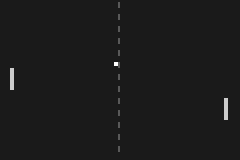 |  | 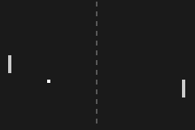 | 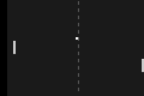 | 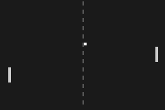 | 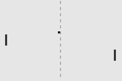 | 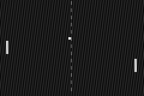 | 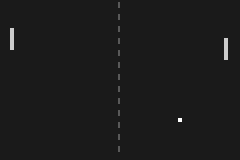 |
Scores of each variant against the reference (sim_x(reference, variant)):
metrics = (:sim_mse, :sim_mae, :sim_correlation, :sim_ssim, :sim_hist_intersection,
:sim_hist_bhattacharyya, :sim_iou, :sim_dice, :sim_coverage, :sim_hamming,
:sim_chamfer, :sim_shift_x, :sim_shift_y)
println(rpad("", 24), join(rpad.(first.(variants), 12)))
for m in metrics
f = getfield(S, m)
println(rpad(m, 24), join(rpad.(string.(round.([g_call(f, reference, img) for (_, img) in variants], digits = 3)), 12)))
end same ball moved shifted 6 pxmirrored inverted noisy other rally
sim_mse 0.0 0.001 0.006 0.006 0.637 0.002 0.005
sim_mae 0.0 0.001 0.014 0.009 0.797 0.038 0.007
sim_correlation 1.0 0.88 -0.026 -0.007 -1.0 0.779 0.081
sim_ssim 1.0 0.983 0.803 0.883 0.174 0.384 0.924
sim_hist_intersection 1.0 1.0 0.95 1.0 0.0 0.171 1.0
sim_hist_bhattacharyya 1.0 1.0 0.975 1.0 0.0 0.413 1.0
sim_iou 1.0 0.846 0.0 0.0 0.0 1.0 0.0
sim_dice 1.0 0.917 0.0 0.0 0.0 1.0 0.0
sim_coverage 1.0 0.917 0.0 0.0 0.0 1.0 0.0
sim_hamming 0.0 0.001 0.01 0.01 1.0 0.0 0.01
sim_chamfer 0.0 0.017 0.039 0.066 0.086 0.0 0.143
sim_shift_x 0.0 0.0 0.05 0.008 -0.475 0.0 0.0
sim_shift_y 0.0 0.0 0.0 0.0 0.425 0.0 -0.438How to read them:
| Operator | Range | Meaning |
|---|---|---|
sim_mse, sim_mae | 0 = identical | mean squared / absolute pixel difference |
sim_correlation | [-1, 1] | Pearson correlation; -1 for the inverted frame |
sim_ssim | [-1, 1] | structural similarity, mean over 8×8 blocks: compares local brightness, contrast and structure. Noise on flat areas lowers it a lot (0.38 for the noisy frame), small moves barely do (0.98) |
sim_hist_intersection, sim_hist_bhattacharyya | [0, 1], 1 = same | compare value histograms only: blind to where things are, so a shift or mirror scores ≈ 1 |
sim_iou, sim_dice, sim_coverage, sim_hamming | [0, 1] | compare foregrounds (pixels >= 0.5, or a third-argument threshold); sim_coverage(a, b) is the share of a inside b |
sim_chamfer | 0 = overlapping | mean distance between the two foregrounds over the image diagonal; grows smoothly as objects drift apart |
sim_shift_x, sim_shift_y | [-0.5, 0.5] | estimated translation of b relative to a (fraction of the size); 0.05 = the 6 px shift. Flat row or column profiles return zero along that axis. Otherwise only meaningful when b really is a moved copy of a: for the inverted frame or another rally the value is arbitrary, so pair it with sim_correlation |
sim_mse, sim_mae and sim_correlation take an optional binary mask as third argument and compare only the pixels inside it. Below, the mask covers the right half of the court. The ball is in the left half in both the reference (column 58) and the "ball moved" frame (column 30), so on the whole frame they differ, but inside the mask they are identical.
right_half = g_binary([c > 61 for r in 1:80, c in 1:120])
moved_ball = variants[2][2]
(
mse_whole = round(g_call(S.sim_mse, reference, moved_ball), digits = 5),
mse_right_half = round(g_call(S.sim_mse, reference, moved_ball, right_half), digits = 5),
correlation_whole = round(g_call(S.sim_correlation, reference, moved_ball), digits = 3),
correlation_right_half = round(g_call(S.sim_correlation, reference, moved_ball, right_half), digits = 3),
)(mse_whole = 0.00067, mse_right_half = 0.0, correlation_whole = 0.88, correlation_right_half = 1.0)The foreground scores (sim_iou, sim_dice, sim_coverage, sim_hamming, sim_chamfer) threshold both images at 0.5 by default, or at a third argument. The threshold decides what counts as "the objects": at 0.3 the net (0.35) joins the paddles and the ball, at 0.9 only the ball remains.
for t in (0.3, 0.5, 0.9)
println(rpad("threshold $t", 16),
"sim_iou(reference, ball moved) = ", rpad(round(g_call(S.sim_iou, reference, moved_ball, t), digits = 3), 8),
"sim_chamfer = ", round(g_call(S.sim_chamfer, reference, moved_ball, t), digits = 3))
endthreshold 0.3 sim_iou(reference, ball moved) = 0.912 sim_chamfer = 0.004
threshold 0.5 sim_iou(reference, ball moved) = 0.846 sim_chamfer = 0.017
threshold 0.9 sim_iou(reference, ball moved) = 0.0 sim_chamfer = 0.228Template matching
match_x_<p>(img, ref) / match_y_<p> cut a template covering p (10%, 20% or 30%) of each side from the centre of ref (or around (s, s) with (img, ref, s)), find where it best matches in img by normalised cross-correlation, and return the match centre. match_score_<p> returns the correlation itself, [-1, 1]: "how present is the thing".
The centre convention composes with the zoom library: zoom_recenter_<sel> puts an object in the middle of a reference frame, then match_* finds the same-looking thing in another frame.
| Reference: templates of 10% (red), 20% (green), 30% (blue) | Moved image: match centres |
|---|---|
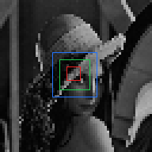 | 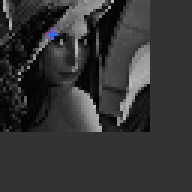 |
Every template operator on this pair (match_x_<p>, match_y_<p>: where the centre of the template was found in the moved image; match_score_<p>: how well it matched). The face moved 14 columns left and 20 rows up, so the match centre is up-left of the image centre (0.5, 0.5):
for p in (10, 20, 30)
x = g_call(getfield(S, Symbol(:match_x_, p, :p)), moved, lena)
y = g_call(getfield(S, Symbol(:match_y_, p, :p)), moved, lena)
score = g_call(getfield(S, Symbol(:match_score_, p, :p)), moved, lena)
println(rpad("match_x_$(p)p / match_y_$(p)p / match_score_$(p)p", 44), "x = ", rpad(round(x, digits = 3), 8),
"y = ", rpad(round(y, digits = 3), 8), "score = ", round(score, digits = 3))
endmatch_x_10p / match_y_10p / match_score_10p x = 0.262 y = 0.167 score = 1.0
match_x_20p / match_y_20p / match_score_20p x = 0.27 y = 0.175 score = 1.0
match_x_30p / match_y_30p / match_score_30p x = 0.27 y = 0.175 score = 1.0(img, ref, s) takes the template around (s, s) in ref instead of its centre, e.g. match_x_20p(moved, lena, 0.3) looks for the region around (0.3, 0.3) of the reference.
Tracking a sprite between two Pong frames: zoom_recenter_smallest(previous, previous) puts the ball at the centre (green box = the 10% template), and match_*_10p(next, centred) finds it in the next frame.
zoom_recenter_smallest(previous) | match_x_10p / match_y_10p on the next frame |
|---|---|
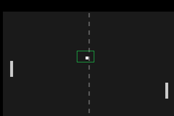 | 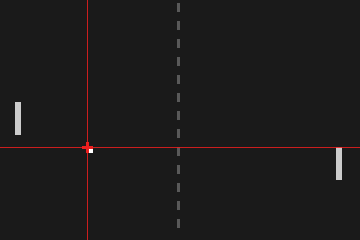 |
Templates with a shorter side below 16 pixels are searched exhaustively. Larger templates use a coarse grid and refine around its best column; this can miss the global maximum. Repeated patterns may also give ambiguous locations. A high match score alone does not establish the intended identity.
A flat template (nothing at the centre of ref) has no shape to match: match_x/match_y return 0.5 and match_score returns 0.
Bundles
UTCGP.number_similarityFromImg — Module
Image comparison: how similar two images are, how far one is shifted from the other, and where a template taken from one image appears in another.
Bundles
The exhaustive, always-current list of operators in each bundle is on the Bundle Catalogue page.
Example
using UTCGP, ImageCore
m = zeros(20, 40); m[8:12, 10:14] .= 1.0 # a bright square
moved = circshift(m, (0, 4)) # the same square, 4 columns to the right
a, b = SImageND(IntensityPixel{N0f8}.(m)), SImageND(IntensityPixel{N0f8}.(moved))
S = UTCGP.number_similarityFromImg
S.sim_mse(a, a) # 0.0: identical
S.sim_iou(a, b) # 1 / 9 ≈ 0.11: 5 shared pixels out of 45
S.sim_shift_x(a, b) # 4 / 40 = 0.1: b is a moved 4 columns right
S.sim_hist_intersection(a, b) # 1.0: same pixel values, wherever they areUTCGP.number_similarityFromImg.bundle_number_similarityFromImg — Constant
bundle_number_similarityFromImgScores comparing two images a and b (intensity or binary) that share height and width. a and b have the same size, or one is 3D (RGB or volume) and the other 2D: the 2D image is then compared with every channel / depth slice and the samples are pooled. Histogram scores are position-free and accept any two images. SSIM, chamfer and shifts are planar (2D pairs only).
- Pixel differences:
sim_mse,sim_mae(0= identical). - Structure:
sim_correlation(Pearson,[-1, 1]),sim_ssim(mean SSIM over 8×8 blocks,[-1, 1]). - Value distributions, position-free:
sim_hist_intersection,sim_hist_bhattacharyya(32 bins,[0, 1],1= same histogram). - Masks (intensity thresholded at
0.5, or at a third argument):sim_iou,sim_dice,sim_coverage(share ofacovered byb),sim_hamming(share of differing pixels),sim_chamfer(mean distance between the two foregrounds over the image diagonal,0= overlapping). - Displacement:
sim_shift_x,sim_shift_y: the translation ofbrelative toathat best aligns their column (row) profiles, as a signed fraction of the image size in[-0.5, 0.5].
sim_mse, sim_mae and sim_correlation also accept a binary mask as third argument and then compare only the samples inside it. The mask shares the pair's height and width: a 2D mask (repeated through every channel / slice of a 3D comparison), or a 3D mask of exactly the comparison's size. A 2D pair has no 3D-mask method: MAGE's decoder then selects the unmasked pair method.
UTCGP.number_similarityFromImg.bundle_number_templateFromImg — Constant
bundle_number_templateFromImgTemplate matching by normalised cross-correlation. match_x_<p>(img, ref) takes the central window of ref covering p of each side as the template, finds where it best matches in img, and returns the normalised column of the match centre (match_y_<p> the row, match_score_<p> the correlation in [-1, 1]). (img, ref, s) takes the template around (s, s) in ref instead of the centre.
Templates whose shorter side is at least 16 pixels are searched coarse-to-fine: a grid of step side ÷ 8 first, then every row of the columns around the best grid position. This is an approximate search: a coarse grid can miss the global maximum, even when a peak is broad. Use small templates when an exhaustive search is needed; the implementation searches every position when min(height, width) < 16.
Combine with zoom_recenter_<sel> to centre an object in a reference frame, then find the same-looking object in later frames.
Timings for the examples
Measured during this documentation build. See Timing methodology for measurement limits and input cases that can make operators expensive.
Julia 1.13.2; znver5; 1 Julia thread(s); optimisation level 2.
Times are warmed wall-clock measurements of the actual calls above, including invokelatest and allocations. Loading, factory generation and image rendering are excluded. CPU load and garbage collection affect these values. The maximum is the slowest observed sample, not a worst-case bound.
| Input | Dimensions | Pixel storage |
|---|---|---|
| image #1 | 80×120 | IntensityPixel{FixedPointNumbers.N0f8} |
| image #2 | 80×120 | IntensityPixel{FixedPointNumbers.N0f8} |
| image #3 | 80×120 | IntensityPixel{FixedPointNumbers.N0f8} |
| image #4 | 80×120 | IntensityPixel{FixedPointNumbers.N0f8} |
| image #5 | 80×120 | IntensityPixel{FixedPointNumbers.N0f8} |
| image #6 | 80×120 | IntensityPixel{FixedPointNumbers.N0f8} |
| image #7 | 80×120 | IntensityPixel{FixedPointNumbers.N0f8} |
| image #8 | 80×120 | BinaryPixel{Bool} |
| image #9 | 64×64 | IntensityPixel{FixedPointNumbers.N0f8} |
| image #10 | 64×64 | IntensityPixel{FixedPointNumbers.N0f8} |
| image #11 | 80×120 | IntensityPixel{FixedPointNumbers.N0f8} |
| image #12 | 80×120 | IntensityPixel{FixedPointNumbers.N0f8} |
Numeric-only plot calls of the same operator and arity are grouped: argument ranges cover the sampled values, the median is the median of the per-case medians, and the maximum covers every observed sample. Image calls keep a row for each input/parameter combination.
| Operator | Inputs | Output | Median (µs) | Observed max (µs) | Allocated bytes (median) | Cases / samples |
|---|---|---|---|---|---|---|
transform_shift | image #1; 0.55; 0.5 | 80×120, IntensityPixel{FixedPointNumbers.N0f8} | 1.63 | 14.82 | 9784 | 1 / 3 |
transform_flip_h | image #1 | 80×120, IntensityPixel{FixedPointNumbers.N0f8} | 1.72 | 8.04 | 9704 | 1 / 3 |
sim_mse | image #1; image #1 | Float64 | 7.11 | 18.22 | 80 | 1 / 3 |
sim_mse | image #1; image #2 | Float64 | 6.89 | 7.63 | 80 | 1 / 3 |
sim_mse | image #1; image #3 | Float64 | 6.93 | 7.0 | 80 | 1 / 3 |
sim_mse | image #1; image #4 | Float64 | 6.8 | 6.9 | 80 | 1 / 3 |
sim_mse | image #1; image #5 | Float64 | 6.83 | 6.88 | 80 | 1 / 3 |
sim_mse | image #1; image #6 | Float64 | 6.85 | 6.9 | 80 | 1 / 3 |
sim_mse | image #1; image #7 | Float64 | 6.81 | 6.87 | 80 | 1 / 3 |
sim_mae | image #1; image #1 | Float64 | 7.13 | 16.99 | 80 | 1 / 3 |
sim_mae | image #1; image #2 | Float64 | 6.84 | 7.54 | 80 | 1 / 3 |
sim_mae | image #1; image #3 | Float64 | 6.84 | 7.44 | 80 | 1 / 3 |
sim_mae | image #1; image #4 | Float64 | 6.77 | 6.86 | 80 | 1 / 3 |
sim_mae | image #1; image #5 | Float64 | 6.7 | 6.82 | 80 | 1 / 3 |
sim_mae | image #1; image #6 | Float64 | 6.79 | 6.81 | 80 | 1 / 3 |
sim_mae | image #1; image #7 | Float64 | 6.84 | 6.89 | 80 | 1 / 3 |
sim_correlation | image #1; image #1 | Float64 | 8.15 | 15.94 | 80 | 1 / 3 |
sim_correlation | image #1; image #2 | Float64 | 8.05 | 8.49 | 80 | 1 / 3 |
sim_correlation | image #1; image #3 | Float64 | 7.98 | 8.05 | 80 | 1 / 3 |
sim_correlation | image #1; image #4 | Float64 | 8.0 | 8.0 | 80 | 1 / 3 |
sim_correlation | image #1; image #5 | Float64 | 8.13 | 20.55 | 80 | 1 / 3 |
sim_correlation | image #1; image #6 | Float64 | 7.97 | 8.11 | 80 | 1 / 3 |
sim_correlation | image #1; image #7 | Float64 | 7.97 | 7.99 | 80 | 1 / 3 |
sim_ssim | image #1; image #1 | Float64 | 9.09 | 17.87 | 80 | 1 / 3 |
sim_ssim | image #1; image #2 | Float64 | 9.03 | 9.62 | 80 | 1 / 3 |
sim_ssim | image #1; image #3 | Float64 | 8.78 | 8.88 | 80 | 1 / 3 |
sim_ssim | image #1; image #4 | Float64 | 8.74 | 8.88 | 80 | 1 / 3 |
sim_ssim | image #1; image #5 | Float64 | 8.78 | 8.78 | 80 | 1 / 3 |
sim_ssim | image #1; image #6 | Float64 | 8.77 | 8.79 | 80 | 1 / 3 |
sim_ssim | image #1; image #7 | Float64 | 8.76 | 8.81 | 80 | 1 / 3 |
sim_hist_intersection | image #1; image #1 | Float64 | 7.09 | 19.94 | 1616 | 1 / 3 |
sim_hist_intersection | image #1; image #2 | Float64 | 6.95 | 7.72 | 1616 | 1 / 3 |
sim_hist_intersection | image #1; image #3 | Float64 | 6.92 | 7.17 | 1616 | 1 / 3 |
sim_hist_intersection | image #1; image #4 | Float64 | 6.72 | 6.88 | 1616 | 1 / 3 |
sim_hist_intersection | image #1; image #5 | Float64 | 6.68 | 6.93 | 1616 | 1 / 3 |
sim_hist_intersection | image #1; image #6 | Float64 | 8.2 | 8.3 | 1616 | 1 / 3 |
sim_hist_intersection | image #1; image #7 | Float64 | 6.83 | 6.83 | 1616 | 1 / 3 |
sim_hist_bhattacharyya | image #1; image #1 | Float64 | 6.87 | 15.94 | 1616 | 1 / 3 |
sim_hist_bhattacharyya | image #1; image #2 | Float64 | 7.23 | 7.51 | 1616 | 1 / 3 |
sim_hist_bhattacharyya | image #1; image #3 | Float64 | 6.72 | 7.06 | 1616 | 1 / 3 |
sim_hist_bhattacharyya | image #1; image #4 | Float64 | 6.72 | 7.02 | 1616 | 1 / 3 |
sim_hist_bhattacharyya | image #1; image #5 | Float64 | 6.69 | 6.78 | 1616 | 1 / 3 |
sim_hist_bhattacharyya | image #1; image #6 | Float64 | 8.21 | 8.34 | 1616 | 1 / 3 |
sim_hist_bhattacharyya | image #1; image #7 | Float64 | 7.03 | 7.44 | 1616 | 1 / 3 |
sim_iou | image #1; image #1 | Float64 | 2.09 | 9.69 | 80 | 1 / 3 |
sim_iou | image #1; image #2 | Float64 | 1.98 | 2.58 | 80 | 1 / 3 |
sim_iou | image #1; image #3 | Float64 | 1.96 | 2.06 | 80 | 1 / 3 |
sim_iou | image #1; image #4 | Float64 | 1.88 | 1.93 | 80 | 1 / 3 |
sim_iou | image #1; image #5 | Float64 | 1.84 | 1.88 | 80 | 1 / 3 |
sim_iou | image #1; image #6 | Float64 | 1.83 | 1.86 | 80 | 1 / 3 |
sim_iou | image #1; image #7 | Float64 | 1.9 | 1.91 | 80 | 1 / 3 |
sim_dice | image #1; image #1 | Float64 | 2.12 | 9.24 | 80 | 1 / 3 |
sim_dice | image #1; image #2 | Float64 | 1.9 | 2.45 | 80 | 1 / 3 |
sim_dice | image #1; image #3 | Float64 | 1.86 | 2.17 | 80 | 1 / 3 |
sim_dice | image #1; image #4 | Float64 | 1.85 | 1.91 | 80 | 1 / 3 |
sim_dice | image #1; image #5 | Float64 | 1.87 | 2.13 | 80 | 1 / 3 |
sim_dice | image #1; image #6 | Float64 | 1.84 | 1.87 | 80 | 1 / 3 |
sim_dice | image #1; image #7 | Float64 | 1.86 | 1.86 | 80 | 1 / 3 |
sim_coverage | image #1; image #1 | Float64 | 2.07 | 8.12 | 80 | 1 / 3 |
sim_coverage | image #1; image #2 | Float64 | 1.99 | 2.54 | 80 | 1 / 3 |
sim_coverage | image #1; image #3 | Float64 | 1.91 | 1.95 | 80 | 1 / 3 |
sim_coverage | image #1; image #4 | Float64 | 1.84 | 1.91 | 80 | 1 / 3 |
sim_coverage | image #1; image #5 | Float64 | 1.85 | 1.89 | 80 | 1 / 3 |
sim_coverage | image #1; image #6 | Float64 | 1.95 | 2.01 | 80 | 1 / 3 |
sim_coverage | image #1; image #7 | Float64 | 1.86 | 1.88 | 80 | 1 / 3 |
sim_hamming | image #1; image #1 | Float64 | 1.8 | 9.22 | 80 | 1 / 3 |
sim_hamming | image #1; image #2 | Float64 | 1.51 | 2.06 | 80 | 1 / 3 |
sim_hamming | image #1; image #3 | Float64 | 1.52 | 1.65 | 80 | 1 / 3 |
sim_hamming | image #1; image #4 | Float64 | 1.52 | 1.52 | 80 | 1 / 3 |
sim_hamming | image #1; image #5 | Float64 | 1.46 | 1.54 | 80 | 1 / 3 |
sim_hamming | image #1; image #6 | Float64 | 1.47 | 1.51 | 80 | 1 / 3 |
sim_hamming | image #1; image #7 | Float64 | 1.54 | 1.56 | 80 | 1 / 3 |
sim_chamfer | image #1; image #1 | Float64 | 106.21 | 126.31 | 80 | 1 / 3 |
sim_chamfer | image #1; image #2 | Float64 | 101.57 | 104.02 | 80 | 1 / 3 |
sim_chamfer | image #1; image #3 | Float64 | 101.73 | 111.6 | 80 | 1 / 3 |
sim_chamfer | image #1; image #4 | Float64 | 101.78 | 101.78 | 80 | 1 / 3 |
sim_chamfer | image #1; image #5 | Float64 | 108.13 | 114.14 | 80 | 1 / 3 |
sim_chamfer | image #1; image #6 | Float64 | 101.53 | 101.57 | 80 | 1 / 3 |
sim_chamfer | image #1; image #7 | Float64 | 101.86 | 102.82 | 80 | 1 / 3 |
sim_shift_x | image #1; image #1 | Float64 | 6.89 | 19.27 | 4240 | 1 / 3 |
sim_shift_x | image #1; image #2 | Float64 | 5.2 | 5.62 | 4240 | 1 / 3 |
sim_shift_x | image #1; image #3 | Float64 | 4.69 | 4.76 | 4240 | 1 / 3 |
sim_shift_x | image #1; image #4 | Float64 | 4.36 | 4.44 | 4240 | 1 / 3 |
sim_shift_x | image #1; image #5 | Float64 | 4.64 | 16.88 | 4240 | 1 / 3 |
sim_shift_x | image #1; image #6 | Float64 | 4.49 | 4.72 | 4240 | 1 / 3 |
sim_shift_x | image #1; image #7 | Float64 | 4.52 | 4.63 | 4240 | 1 / 3 |
sim_shift_y | image #1; image #1 | Float64 | 3.72 | 18.07 | 2896 | 1 / 3 |
sim_shift_y | image #1; image #2 | Float64 | 3.09 | 5.9 | 2896 | 1 / 3 |
sim_shift_y | image #1; image #3 | Float64 | 3.04 | 3.1 | 2896 | 1 / 3 |
sim_shift_y | image #1; image #4 | Float64 | 2.74 | 3.0 | 2896 | 1 / 3 |
sim_shift_y | image #1; image #5 | Float64 | 3.08 | 3.14 | 2896 | 1 / 3 |
sim_shift_y | image #1; image #6 | Float64 | 3.12 | 3.16 | 2896 | 1 / 3 |
sim_shift_y | image #1; image #7 | Float64 | 2.7 | 3.02 | 2896 | 1 / 3 |
sim_mse | image #1; image #2; image #8 | Float64 | 4.12 | 9.86 | 96 | 1 / 3 |
sim_correlation | image #1; image #2; image #8 | Float64 | 5.17 | 9.51 | 96 | 1 / 3 |
sim_iou | image #1; image #2; 0.3 | Float64 | 2.07 | 7.99 | 96 | 1 / 3 |
sim_chamfer | image #1; image #2; 0.3 | Float64 | 106.89 | 111.59 | 96 | 1 / 3 |
sim_iou | image #1; image #2; 0.5 | Float64 | 1.98 | 2.04 | 96 | 1 / 3 |
sim_chamfer | image #1; image #2; 0.5 | Float64 | 105.18 | 106.37 | 96 | 1 / 3 |
sim_iou | image #1; image #2; 0.9 | Float64 | 1.92 | 2.04 | 96 | 1 / 3 |
sim_chamfer | image #1; image #2; 0.9 | Float64 | 101.41 | 102.76 | 96 | 1 / 3 |
match_x_10p | image #9; image #10 | Float64 | 51.92 | 78.21 | 848 | 1 / 3 |
match_y_10p | image #9; image #10 | Float64 | 52.17 | 72.88 | 848 | 1 / 3 |
match_x_20p | image #9; image #10 | Float64 | 158.65 | 166.7 | 3152 | 1 / 3 |
match_y_20p | image #9; image #10 | Float64 | 147.41 | 173.99 | 3152 | 1 / 3 |
match_x_30p | image #9; image #10 | Float64 | 133.72 | 155.79 | 6144 | 1 / 3 |
match_y_30p | image #9; image #10 | Float64 | 131.34 | 170.56 | 6144 | 1 / 3 |
zoom_recenter_smallest | image #1; image #1 | 80×120, IntensityPixel{FixedPointNumbers.N0f8} | 13.92 | 16.26 | 11160 | 1 / 3 |
match_x_10p | image #11; image #12 | Float64 | 259.28 | 263.13 | 1808 | 1 / 3 |
match_y_10p | image #11; image #12 | Float64 | 264.88 | 269.26 | 1808 | 1 / 3 |
match_score_10p | image #9; image #10 | Float64 | 54.22 | 76.5 | 848 | 1 / 3 |
match_score_20p | image #9; image #10 | Float64 | 151.57 | 167.83 | 3152 | 1 / 3 |
match_score_30p | image #9; image #10 | Float64 | 128.89 | 155.9 | 6144 | 1 / 3 |